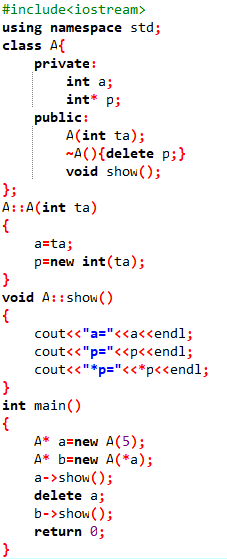
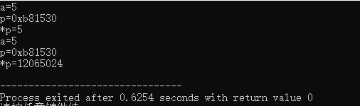
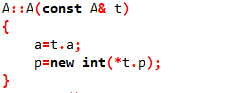
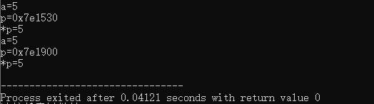

在介绍C++浅拷贝与深拷贝之前，我们先引出C++的拷贝构造函数。
C++拷贝构造函数是一种特殊的构造函数，其形参是本类对象的引用。用于在建立一个新的对象时，使用一个已经存在的对象来初始化这个新对象。因为拷贝构造函数时特殊的构造函数，所以其没有返回值类型，且名称与类名相同；该函数只有一个参数，即此类对象的引用；所有类都必须有一个拷贝构造函数，如果没有自动以拷贝构造函数，系统会自动产生一个默认拷贝构造函数。
自定义拷贝构造函数的一般形式为：
类名：：类名（const 类名& 对象名）
{
函数体；
}
浅拷贝：在进行初始化的过程中仅进行简单的数据成员赋值。
例如：
class A{
private:
int a;
public:
A(int ta):a(ta){}
};
有如下代码：
A a(5);
A b(a);
程序执行b(a)时，执行操作：b.a=a.a;与系统自动产生的拷贝构造函数：
A::A(const A& t){this->a=t.a;}
执行相同内容。完整代码如下：

执行结果为：

从结果中我们发现，我们通过对象a初始化的对象b中，数据元素与a中完全相等，甚至指针指向的地址都相同。不难看出，在a初始化b过程中只是进行了简单的值传递，并没有为b中的p申请新的堆内存空间。即两个对象的指针指向同一个地址，这也就意味着此地址将被释放两次，显然是不可取的。这一点由输出结果中b中*p的值异常便可看出。为了解决此问题，我们需要深拷贝。
深拷贝：当类中有指针类型元素，需要申请堆内存空间时，为新的指针分配新的内存空间。（不可进行简单的值传递）
这时，需要我们自定义拷贝构造函数：

此时，重新编译运行程序，结果为：

此时，虽然对象a已被删除，对象a仍输出正常，这是因为在自定义的深拷贝函数中，为新的对象申请了新的空间，而不是令其指向a中p指针变量指向的地址。
总结：
当类中无需申请动态资源时，浅拷贝构造函数可以很好的工作。当需要申请动态内存时，即类中有指针变量，则需要自定义深度拷贝函数。
表述不当之处，还望各路大神指正。